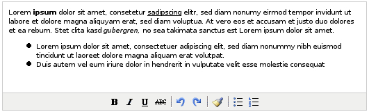
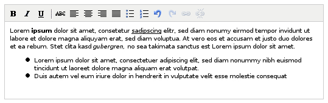
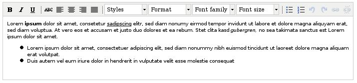
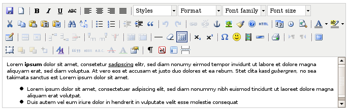
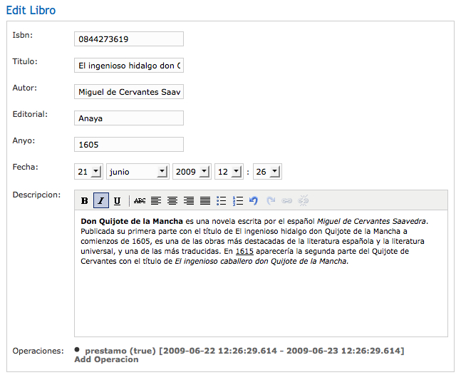
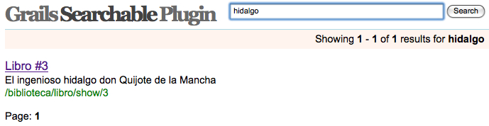
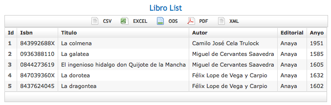

Web 2.0
Podemos considerar que nuestra aplicación está bastante avanzada si hablamos de funcionalidad, pero hoy en día, esto no es suficiente y siempre debemos ser capaces de proporcionar algo más. Para eso, en esta sesión vamos a ver como implementar diversas características de la llamada Web 2.0 en las aplicaciones que generemos con Grails.
En primer lugar veremos como podemos utilizar varios plugins para mejorar la forma en la que los usuarios pueden crear contenido con un formato mejorado en las aplicaciones. Posteriormente veremos como mediante un plugin de Grails vamos a ser capaces de dotar a nuestra aplicación de un sistema de búsquedas sin mayores complicaciones.
También veremos como podemos subir archivos a nuestras aplicaciones para que, por ejemplo, los usuarios puedan subir una foto suya o que los bibliotecarios puedan subir la portada de los libros. Por último, veremos como la creación de librerías de etiquetas nos facilita determinadas tareas repetitivas.
Texto enriquecido
Si necesitamos que los usuarios de nuestras aplicaciones sean capaces de introducir código formateado podemos hacer dos cosas. Una de ellas consiste en permitir que sean ellos mismos quienes introduzcan código HTML, con los peligros que esto puede conllevar. La segunda opción consiste en utilizar algún editor de texto enriquecido de los existentes como FCK Editor, TinyMCE o un editor tipo Wiki. Nosotros vamos a centrarnos en dotar a nuestra aplicación la posibilidad de insertar texto formateado por medio del editor FCK Editor.
En Grails tenemos un plugin llamado Rich UI que nos proporciona diversos componentes del tipo Web 2.0 o AJAX, entre las que se encuentra el editor de texto enriquecido FCK. Como siempre, necesitamos instalar dicho plugin y lo haremos mediante el comando grails install-plugin richui.
Algunos de los componentes que vienen con este plugin requieren de determinadas librerías Javascript o CSS, pero no debemos preocuparnos por ello, porque con la instalación del plugin, estas librerías ya se han descargado. Cada vez que queremos utilizar uno de los componentes instalados con el plugin, debemos incluir en los archivos GSP donde vayamos a utilizarlo el siguiente código
<resource: nombreComponente/>
En el caso del editor de texto enriquecido, el nombre del componente es richTextEditor con lo que en las páginas GSP donde vayamos a utilizarlo debemos incluir la sentencia <resource:richTextEditor/>. La etiqueta que implementa un editor de este tipo es <richui:richTextEditor/>, la cual soporta los siguientes atributos:
- name, nombre del elemento del formulario. Obligatorio
- id, identificador HTML del elemento del formulario. Opcional
- value, valor del elemento del formulario. Opcional
- height, altura del editor
- width, anchura del editor
Además, podemos especificar en la etiqueta <resource:richTextEditor /> el tipo de editor que deseamos mediante el atributo type, que puede tomar cualquiera de los valores siguientes:
- simple
- medium
- advanced
- full
Las siguientes imágenes muestran ejemplos de como quedarían los editores para cada uno de los tipos comentados.




Un lugar ideal para probar este editor de texto enriquecido puede ser en la propiedad descripción de la clase de dominio Libro. Para conseguir esto, vamos a tener que modificar los archivos de las vistas create.gsp y edit.gsp. Aquí modificaremos sólo el archivo edit.gsp, puesto que con create.gsp se actuaría de la misma forma.
Abrimos el archivo edit.gsp y modificamos el elemento del formulario relativo a la descripción para que ahora contenga un editor de texto enriquecido, quedando de la siguiente forma:
<tr class="prop">
<td valign="top" class="name">
<label for="descripcion">Descripcion:</label>
</td>
<td valign="top" class="value ${hasErrors(bean:libroInstance,field:'descripcion','errors')}">
<richui:richTextEditor name="descripcion" value="${fieldValue(bean:libroInstance, field:'descripcion').decodeHTML()}" width="525" />
</td>
</tr>
Además de la etiqueta correspondiente y rellenar el valor del elemento con el contenido de la propiedad, hemos tenido que decodificar la salida en HTML con la función decodeHTML() ya que en caso de no haberlo hecho, se hubieran convertido todas los caracteres < y > por < y > y no se hubiera mostrado el texto en formato HTML.

Si ahora comprobamos como ha quedado el texto introducido con formato, veremos que éste se muestra con las etiquetas HTML, es decir, sin mostrar el formato. Para solucionar este problema, debemos utilizar también la función decodeHTML() en el archivo de la vista show.gsp para que la salida se muestre tal y como queremos.
<tr class="prop">
<td valign="top" class="name">Descripcion:</td>
<td valign="top" class="value">${fieldValue(bean:libroInstance, field:'descripcion').decodeHTML()}</td>
</tr>
Ahora, deberíamos hacer lo mismo para cuando se inserta un nuevo libro en la base de datos modificando la vista create.gsp.
El plugin instalado para poder utilizar los editores de texto enriquecidos RichUI tiene además otras funcionalidades que pueden ser útiles para dotar a nuestra aplicación de mayor interactividad y dinamismmo. En la página http://www.grails.org/RichUI+Plugin se puede encontrar toda la información referente a este plugin.
Tooltips
Si has visitado la página del plugin RichUI, habrás podido comprobar como este plugin cuenta con otras características, entre las que se encuentra la posibilidad de añadir tooltips en nuestras páginas. Los tooltips son pequeños textos de ayuda que aparecen sobre las imágenes o los enlaces que habitualmente nos indican el título del mismo.
Para utilizar este plugin, al igual que hicimos con el plugin relativo al texto enriquecido, debemos insertar en la cabecera de la página donde vayamos a utilizarlo la etiqueta correspondiente a esta característica. En este caso será <resource:tooltip />.
Para probar este plugin, vamos a mostrar una ayuda que le indique a un usuario que desee registrarse en el sistema el número mínimo de caracteres que debe tener la contraseña. Para ello, podemos añadir el siguiente contenido en el archivo register.gsp tras el campo de texto de la contraseña.
<span id="ayudaPassword" title="La contraseña debe tener al menos 6 caracteres"> Ayuda </span> <richui:tooltip id="ayudaPassword" />
Plugin de búsqueda de contenido
Otro aspecto interesante para cualquier aplicación de este estilo, es dotar a la misma de un buscador que permita localizar fácilmente determinada información. Para nuestra aplicación, sería muy interesante que los usuarios pudieran encontrar la información de los libros simplemente introduciendo algunas palabras relativas a los mismos.
Para esta tarea de búsqueda, Grails cuenta también con un plugin llamado Searchable que nos va a facilitar muchísimo esta labor. Este plugin además, está basado en el framework OpenSymphony Compass Search Engine y que tiene por detrás a Apache Lucene, con lo que el plugin cuenta con mucho respaldo.
Como siempre, lo primero que debemos hacer es instalarlo y para ello debemos ejecutar el comando grails install-plugin searchable. Una vez instalado, podemos comprobar que en la dirección http://localhost:8080/biblioteca/searchable, tenemos un buscador que se ha generado automáticamente. Sin embargo, si probamos a hacer alguna búsqueda, el buscador nos dirá que no ha encontrada nada. Esto es porque todavía no le hemos dicho al plugin donde debe buscar la información.
Como comentábamos anteriormente, en nuestra aplicación vamos a necesitar un buscador de libros para facilitar la labor a los usuarios. Para que el plugin searchable sea capaz de encontrar libros que contengan un determinado texto en su definición, necesitamos modificar la clase de dominio Libro y añadirle una nueva propiedad llamada searchable. Esta propiedad es static y debe contener un valor booleano, con lo que la clase de dominio Libro quedaría así:
class Libro {
String isbn
String titulo
String autor
String editorial
Integer anyo
String descripcion
Date fecha
static searchable = true
......
Si ahora volvemos a realizar la búsqueda anterior, el buscador nos devolverá los resultados en donde haya encontrado alguna coincidencia, tal y como aparece en la siguiente imagen, donde se ha buscado aquellas entradas de libros que coincidan con la palabra hidalgo.

Como has podido comprobar, añadir un buscador a nuestra aplicación ha sido muy rápido y sencillo, sin embargo, dicho buscador puede tener una apariencia y un comportamiento que difiera en lo que nosotros estábamos buscando.
Para conseguir modificar tanto el comportamiento como la apariencia del plugin, éste viene con un controlador y una vista que podemos modificar a nuestro gusto para que se adapte a nuestras necesidades. Nosotros no vamos a meternos tan a fondo y simplemente vamos a ver algunas modificaciones que podemos hacer para afinar la búsqueda en nuestras clases de dominio.
Añadiendo la propiedad static searchable = true a la clase de dominio Libro, estamos permitiendo que searchable busque en cualquier propiedad de la clase, lo que no siempre puede ser lo correcto. En determinadas ocasiones es posible que necesitemos buscar sólo en determinadas propiedades de la clase. Para ello, el plugin permite la utilización de dos variables con las que le indicaremos al sistema donde puede buscar o donde no.
Estas dos variables son only y except y podemos definirlas de la siguiente forma static searchable = [only: ['titulo', 'autor', 'descripcion']], para indicarle que debe buscar en las propiedades titulo, autor y descripcion o bien mediante static searchable = [except: 'isbn'], si lo que queremos es indicarle sólo aquellas propiedades en las que no debemos realizar la búsqueda. En este último caso, buscaremos en todas las propiedades de la clase de dominio Libro excepto en isbn.
Carga de archivos
Otra característica interesante, esta quizás no tan 2.0, puede ser la carga de archivos. Para ver como los clientes podrían subir archivos a nuestra aplicación, vamos a crear la posibilidad de que los usuarios suban una imagen con su perfil. Para ello, necesitamos crear una serie de propiedades y restricciones en la clase de dominio Usuario, que quedaría de la siguiente forma.
class Usuario {
String login
String password
String nombre
String apellidos
String tipo
byte[] imagen
String nombreImagen
String contentTypeImagen
......
static constraints = {
....
imagen(nullable:true, blank:true)
nombreImagen(nullable:true, blank:true)
contentTypeImagen(nullable:true, blank:true)
}
......
}
En este ejemplo se va a optar por almacenar la imagen directamente en la base de datos, por eso se ha indicado el tipo de dato byte[] para la propiedad imagen. Además, se han creado también un par de nuevos campos para indicar tanto el nombre de la imagen subida como el tipo de la misma.
En primer lugar, vamos a empezar creando el elemento del formulario correspondiente en la página edit.gsp y modificando el tipo de formulario para que permita la carga de archivos con el atributo enctype="multipart/form-data". Así quedarían las modificaciones realizadas en el archivo edit.gsp
<g:form method="post" enctype="multipart/form-data">
.....
<tr class="prop">
<td valign="top" class="name">
<label for="tipo"><g:message code="usuario.imagen.label" default="Imagen" />:</label>
</td>
<td valign="top" class="value ${hasErrors(bean:usuarioInstance,field:'imagen','errors')}">
<input type="file" name="imagen"/>
</td>
</tr>
.....
</g:form>
El siguiente paso sería modificar el método correspondiente en el controlador de la clase Usuario para que almacene la información necesaria (contentTypeImagen y nombreImagen). El método modificado sería update() y las modificaciones quedan resaltadas en negrita en el siguiente fragmento de código.
def update = {
params.password = DigestUtils.md5Hex(params.password)
def usuarioInstance = Usuario.get( params.id )
if(usuarioInstance) {
if(params.version) {
def version = params.version.toLong()
if(usuarioInstance.version > version) {
usuarioInstance.errors.rejectValue("version", "usuario.optimistic.locking.failure", "Another user has updated this Usuario while you were editing.")
render(view:'edit',model:[usuarioInstance:usuarioInstance])
return
}
}
params.contentTypeImagen = params.imagen.contentType
params.nombreImagen = params.imagen.originalFilename
usuarioInstance.properties = params
if(!usuarioInstance.hasErrors() && usuarioInstance.save()) {
flash.message = "usuario.updated.message"
flash.args = [usuarioInstance.nombre, usuarioInstance.apellidos]
flash.defaultMsg = "Usuario modificado correctamente"
redirect(action:show,id:usuarioInstance.id)
}
else {
render(view:'edit',model:[usuarioInstance:usuarioInstance])
}
}
else {
flash.message = "${message(code: 'default.not.found.message', args: [message(code: 'usuario.label', default: 'Usuario'), params.id])}"
redirect(action:edit,id:params.id)
}
}
Simplemente con estas dos modificaciones, nuestra aplicación va a tener la posibilidad de subir imágenes correspondientes a los usuarios. Pero, ¿cómo podemos ver estas imágenes subidas?. Necesitamos un nuevo método en el controlador de la clase Usuario que nos muestre estas imágenes. Vamos a llamar al nuevo método showImagen().
def showImagen = {
def usuarioInstance = Usuario.get( params.id )
response.setHeader("Content-disposition", "inline; filename='${usuarioInstance.nombreImagen}'")
response.contentType="${usuarioInstance.contentTypeImagen}"
response.outputStream << usuarioInstance.imagen
}
Si ahora accedemos a http://localhost:8080/biblioteca/usuario/showImagen/1, el sistema nos mostrará la imagen correspondiente al usuario con identificador número 1. Si en lugar de haber utilizado como Content-disposition el valor inline, hubiéramos indicado el valor attachment, el sistema intentaría descargar el archivo en lugar de visualizarlo.
Utilizando este mismo método, vamos a mostrar esa imagen cuando se edite la información del usuario. Sólo se mostrará la imagen en caso de que el usuario haya subido alguna. Esta imagen se mostrará junto al elemento de formulario necesario para subir el fichero.
<tr class="prop">
<td valign="top" class="name">
<label for="tipo">Imagen:</label>
</td>
<td valign="top" class="value ${hasErrors(bean:usuarioInstance,field:'imagen','errors')}">
<input type="file" name="imagen"/><br/>
<g:if test="${usuarioInstance?.contentTypeImagen != '' }">
<img src="showImagen/${usuarioInstance?.id}"/>
</g:if>
</td>
</tr>
Exportar a varios formatos
Hoy en día, cualquier aplicación que se precie debe ser capaz de exportar sus datos a otros formatos para que el usuario tenga la comodidad de elegir como quiere utilizar los datos. Los formatos más comunes a exportar la información de nuestra aplicación será pdf, hojas de cálculo excel, csv (datos separados por comas) u ods (la hoja de cálculo de OpenOffice).
Esta tarea que en otros sistemas se vuelve complicada y pesada, en Grails podemos solucionarla utilizando un plugin disponible llamado export. Como siempre, lo primero que vamos a hacer es instalarlo mediante el comando grails install-plugin export.
Una vez instalado el plugin export debemos añadir algunos mime types en la variable grails.mime.types del archivo Config.groovy. Los nuevos mime types serán los relativos a csv, excel, pdf y ods. La variable grails.mime.types quedaría así:
grails.mime.types = [ html: ['text/html','application/xhtml+xml'],
xml: ['text/xml', 'application/xml'],
text: 'text/plain',
js: 'text/javascript',
rss: 'application/rss+xml',
atom: 'application/atom+xml',
css: 'text/css',
pdf: 'application/pdf',
excel: 'application/vnd.ms-excel',
ods: 'application/vnd.oasis.opendocument.spreadsheet',
csv: 'text/csv',
all: '*/*',
json: ['application/json','text/json'],
form: 'application/x-www-form-urlencoded',
multipartForm: 'multipart/form-data'
]
Para empezar a utilizar el plugin, debemos incluir la etiqueta <export:resource/> en la cabecera del archivo GSP donde queramos incluir las opciones para exportar. Esto incluirá los archivos CSS necesarios para crear una barra de herramientas con las opciones para exportar la página actual.
El siguiente paso consistirá en incluir la barra de herramientas necesaria para exportar la página HTML generada a algún formato de los ya comentados. Para esto el plugin pone a nuestra disposición una nueva etiqueta <export:formats />, la cual acepta como parámetro un listado de los formatos a los que queremos exportar la página, como por ejemplo <export:formats formats="['csv','excel','ods','pdf','xml']"/>.
Si queremos añadir por ejemplo en la página que contiene el listado de libros una barra para exportar dicho listado, podríamos tener algo así en la página grails-app/views/libro/list.gsp.
<html>
<head>
<meta http-equiv="Content-Type" content="text/html; charset=UTF-8"/>
<meta name="layout" content="main" />
<g:javascript library="scriptaculous"/>
<export:resource />
<title>Libro List</title>
</head>
<body>
<div class="nav">
<span class="menuButton"><a class="home" href="${createLinkTo(dir:'')}">Home</a></span>
<span class="menuButton"><g:link class="create" action="create">New Libro</g:link></span>
</div>
<div class="body">
<h1>Libro List</h1>
<g:if test="${flash.message}">
<div class="message">${flash.message}</div>
</g:if>
<export:formats formats="['csv', 'excel', 'ods', 'pdf', 'xml']" />
<div class="list">
........
</html>
Si echamos un vistazo al listado de libros comprobaremos como en la parte superior de los mismos aparecerá una barra con los formatos a los que podamos exportar dicho listado.

Sin embargo, si intentamos exportar el listado a cualquier de los formatos utilizados, veremos como no sucede nada nuevo y la aplicación vuelve a mostrarnos el listado tal y como ha aparecido siempre, es decir, en formato HTML. Para que la aplicación pueda exportar a los nuevos formatos, debemos modificar el controlador de la clase de dominio Libro y más en concreto el método list() para que acepte los nuevos formatos.
package biblioteca
import org.codehaus.groovy.grails.commons.ConfigurationHolder
class LibroController {
// Servicio para exportar a varios formatos ofrecidos por el plugin Export
def exportService
def index = { redirect(action:list,params:params) }
// the delete, save and update actions only accept POST requests
static allowedMethods = [delete:'POST', save:'POST', update:'POST']
def list = {
params.max = Math.min( params.max ? params.max.toInteger() : 10, 100)
if(params?.format && params.format != "html"){
response.contentType = ConfigurationHolder.config.grails.mime.types[params.format]
response.setHeader("Content-disposition", "attachment; filename=libros.${params.format}")
exportService.export(params.format, response.outputStream, Libro.list(params), [:], [:])
}
[ libroInstanceList: Libro.list( params ), libroInstanceTotal: Libro.count() ]
}
Ahora nuestra aplicación sí va a ser capaz de exportar a otros formatos para que el usuario final elija cual de ellos utilizar en cada ocasión. Sin embargo, si echamos un vistazo por ejemplo al formato en PDF, comprobaremos como el listado que aparece muestra todas las propiedades de la clase Libro, a excepción de la propiedad version, lo cual no va a ser aconsejable.
Para mejorar esto, el plugin permite especificar que propiedades queremos mostrar e incluso la etiqueta que queremos que aparezca en la fila de encabezados de la tabla. Para conseguir esto, necesitamos completar los dos últimos parámetros del método export() que anteriormente dejábamos vacíos. Además, también necesitaremos indicarle el formato de como deseamos las propiedades de los libros y un mapa de parámetros para el fichero exportado. Así quedaría el método list().
def list = {
params.max = Math.min( params.max ? params.max.toInteger() : 10, 100)
if(params?.format && params.format != "html"){
response.contentType = ConfigurationHolder.config.grails.mime.types[params.format]
response.setHeader("Content-disposition", "attachment; filename=libros.${params.format}")
List propiedades = ["isbn", "titulo", "autor", "editorial", "anyo", "descripcion"]
Map etiquetas = ["isbn":"ISBN", "titulo":"Título", "autor":"Autor", "editorial":"Editorial", "anyo":"Año", "descripcion":"Descripción"]
// Closure formateador
def mayusculas = { domain, value -> return value.toUpperCase() }
Map formateadores = [isbn: mayusculas]
Map parametros = [title: "LISTADO DE LIBROS"]
exportService.export(params.format, response.outputStream, Libro.list(params), propiedades, etiquetas, formateadores, parametros)
}
[ libroInstanceList: Libro.list( params ), libroInstanceTotal: Libro.count() ]
}
Por último, comentar también que podemos cambiar los textos asociados a cada uno de los formatos que aparecen en la barra para exportar. Simplemente debemos crear nuevas entradas en el archivo grails-app/i18n/messages.properties correspondientes, tal y como aparece en el siguiente fragmento de código.
default.csv = CSV default.excel = EXCEL default.pdf = PDF default.xml = XML default.ods = ODS
Crear fuentes RSS
Otro aspecto interesante de las aplicaciones web recientes es la posibilidad de intercambiar información mediante el formato RSS. Las siglas han ido evolucionando su significado desde Rich Site Summary, pasando por RDF Site Summary para terminar significando Really Simple Syndication. El formato RSS no es más que un archivo XML utilizado para distribuir contenido de un sitio web sin necesidad de utilizar un navegador web. Habitualmente, los RSS se utilizan para generar otra forma de ver las noticias generadas en un sitio web.
En nuestra aplicación no tenemos noticias, sin embargo, si tenemos libros y quizás estaría bien tener un RSS que informara a los usuarios de la biblioteca los nuevos libros que vaya adquiriendo nuestro centro. Para que el usuario no tenga que estar constantemente accediendo a la web, que mejor que disponer de una fuente RSS donde se recojan estas nuevas adquisiciones.
Para añadir esta nueva funcionalidad en nuestra aplicación, Grails pone a nuestra disposición un plugin que se encargará de hacer el trabajo sucio. Este plugin se llama feeds y como siempre, lo primero que vamos a hacer es instalarlo mediante el comando grails install-plugin feeds.
Una vez instalado el plugin, debemos crear en el controlador de la clase Libro un nuevo método llamado feed() que se encargue de la generación de la fuente RSS. El método realizará una llamada a la función render() habitual, pero en lugar de especificar una vista le indicaremos el tipo de RSS y la versión que queremos generar, así como un closure donde construiremos el contenido de la fuente RSS. Actualmente el plugin soporta tanto el formato RSS como ATOM. El método feed() podría quedar así:
package biblioteca
class LibroController {
.....
def feed = {
render(feedType:"rss", feedVersion:"2.0") {
title = "Los nuevos libros"
link = "http://localhost:8080/biblioteca/libro/feed"
description = "Fuente RSS de los nuevos libros adquiridos por la biblioteca"
Libro.list().each() { libro ->
entry(libro.titulo) {
link = "http://localhost:8080/biblioteca/libro/show/${libro.id}"
author = libro.autor
publishedDate = libro.fecha
libro.descripcion
}
}
}
}
}
El parámetro feedType es obligatorio y puede tomar los valores rss o atom, mientras que el parámetro feedVersion es opcional y si no se especifica tomará por defecto los valores 2.0 para rss y 1.0 para atom.
Las entradas del feed tomarán como parámetro el título de la misma, en nuestro caso libro.titulo y también se le pueden especificar los parámetros link, author, publishedDate, así como el contenido del mismo
Sólo nos queda probar que nuestra fuente de datos RSS funciona correctamente accediendo a la dirección http://localhost:8080/biblioteca/libro/feed.
Librería de etiquetas
Grails nos ofrece la posibilidad de utilizar un amplio rango de etiquetas tanto JSP como GSP, pero en ocasiones, es posible que necesitemos crear nuestra propia librería de etiquetas. Estas etiquetas nos van a permitir realizar tareas repetitivas de forma rápida y sencilla.
Las librerías de etiquetas no requieren ninguna tarea de configuración y se recargan automáticamente sin reiniciar el servidor.
En Grails tenemos dos métodos para crear etiquetas. Por un lado mediante el comando grails create-tag-lib y por otro creando una nueva clase en el directorio grails-app/taglib cuyo nombre termine en TagLib. Nosotros utilizaremos como hasta ahora el comando grails create-tag-lib Biblioteca.
Etiquetas simples
El primer ejemplo de etiqueta creada por nosotros, va a ser una etiqueta que permita la inclusión de archivos de funciones javascript en el código de nuestras páginas GSPs. Para ello definimos un método en la nueva clase BibliotecaTagLib con el siguiente contenido:
def includeJs = {attrs ->
out << "<script src='scripts/${attrs['script']}.js' />"
}
La creación de la etiqueta necesita como parámetro los atributos de la misma. En este primer ejemplo, sólo vamos a utilizar un atributo que será el nombre del archivo javascript que queremos invocar en nuestra página GSP.
Una vez creada la etiqueta, para realizar la invocación de la misma en las páginas GSP utilizaremos el siguiente código.
<g:includeJs script="miscript"/>
Para invocar la nueva librería creada se utiliza el namespace genérico <g>. Sin embargo, Grails nos permite crear nuestro propio espacio de nombres para que el código generado sea sencillo de leer. El espacio de nombres que vamos a utilizar será me, acrónimo de mis etiquetas. Para ello debemos definir una variable estática al inicio de la clase BibliotecaTagLib llamada namespace e indicándole el valor del nuevo espacio de nombres, tal y como aparece en el siguiente fragmento de código.
package biblioteca
class BibliotecaTagLib {
static namespace = 'me'
def includeJs = {attrs ->
out << "<script src='scripts/${attrs['script']}.js'/>"
}
}
De esta forma, en nuestras páginas GSP ya no tendríamos que utilizar <g:includeJs script="miscript"/> sino que podríamos emplear <me:includeJs script="miscript"/>, con lo que la persona que lea el código podrá detectar que esa etiqueta es una etiqueta propia de la aplicación.
Etiquetas lógicas
Con Grails también es posible crear etiquetas lógicas que evalúen una cierta condición y actúen en consecuencia en función de dicha evaluación. Si pensamos en algo que podría sernos útil en nuestra aplicación podría ser una nueva etiqueta que compruebe si el usuario autenticado es un administrador. El siguiente método realiza esta comprobación y en caso de ser cierto, se mostraría el contenido encerrado entre la etiqueta.
def esAdmin = { attrs, body ->
def usuario = attrs['usuario']
if(usuario != null && usuario.tipo=="administrador") {
out << body()
}
}
En esta ocasión, la nueva etiqueta no sólo recibe el atributo attrs sino que también necesita del atributo body, que se refiere a aquello que esté encerrado entre la apertura y el cierre de la etiqueta. El método comprueba si el usuario pasado por parámetro es un administrador. En la página GSP correspondiente deberíamos indicar el siguiente código.
<me:esAdmin usuario="${session.usuario}">
//Acciones restringidas a los administradores
</me:esAdmin>
Etiquetas iteradoras
De igual forma que las etiquetas lógicas, en Grails también vamos a poder crear nuestras propias librerías de etiquetas iteradoras, que nos facilitarán las tareas repetitivas. Vamos a desarrollar un ejemplo de etiqueta, que nos imprime en nuestra página un determinado párrafo un número de veces pasado por parámetro.
Para conseguir esto, creamos una nueva etiqueta en la clase BibliotecaTagLib creando el método repetir(), al cual le pasaremos los parámetros attrs y body. Como parámetro esta etiqueta simplemente recibirá el número de veces que deseamos repetir el cuerpo de la etiqueta.
def repetir = { attrs, body ->
def i = Integer.valueOf( attrs["times"] )
def actual = 0
i.times {
out << body( ++actual )
}
}
También es posible pasarle parámetros al body. En este caso le hemos indicado como parámetro la iteración actual. Posteriormente, en el código insertado en la página GSP vamos a poder referencia a este parámetro mediante la palabra reservada it.
<me:repetir times="4">
Este sería el párrafo número ${it}<br/>
</me:repetir>
Generador de código HMTL
Grails ofrece la posibilidad de generar código HTML de forma muy sencilla gracias a un Builder del que ya hablamos en la sesión 4, el MarkupBuilder. Para comprobar el funcionamiento de este Builder, vamos a crear una nueva etiqueta que imprima un enlace cuyo atributo href coincida con el título. Por ejemplo, para imprimir un enlace a la página de Google, normalmente debemos incluir el código <a href="http://www.google.com">http://www.google.com</a>. Con esta etiqueta que vamos a crear nos ahorraremos escribir la dirección url dos veces.
En primer lugar creamos un nuevo método en el archivo BibliotecaTagLib.groovy y lo llamaremos printLink(). Este método utilizará el MarkupBuilder e imprimirá un enlace con el valor del atributo href igual al contenido.
def printLink = { attrs, body ->
def mkp = new groovy.xml.MarkupBuilder(out)
mkp {
a(href:body(),body())
}
}
Ahora en la vista podemos añadir una etiqueta como <me:printLink>http://www.google.com</me:printLink>, la cual será traducida al código HTML <a href="http://www.google.com">http://www.google.com</a>.